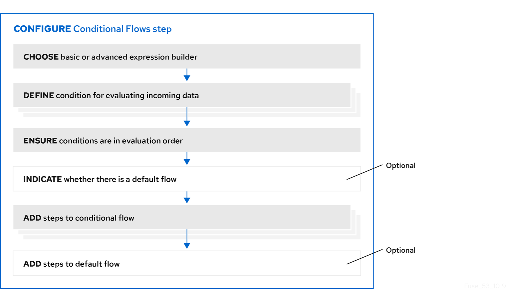

General procedure for configuring a Conditional Flows step
After you add a Conditional Flows step to a flow, the workflow for configuring the step is as shown in the following image:

More about the workflow
-
The basic expression builder prompts you for the property that contains the content that you want to evaluate, and the condition and value that you want to test for. The basic expression builder is suitable for most Conditional Flows steps.
-
The advanced expression builder lets you specify a conditional expression in Camel Simple Language.
-
You must use the same expression builder for all conditions. In other words, to configure a Conditional Flows step, you must use the basic expression builder or the advanced expression builder. You cannot use both.
-
In a conditional flow, you cannot add a Conditional Flows step.